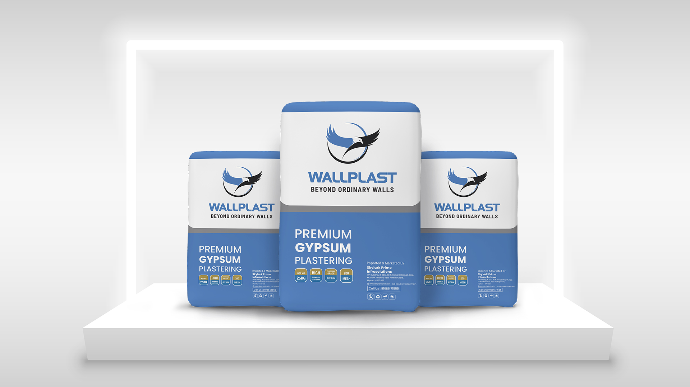
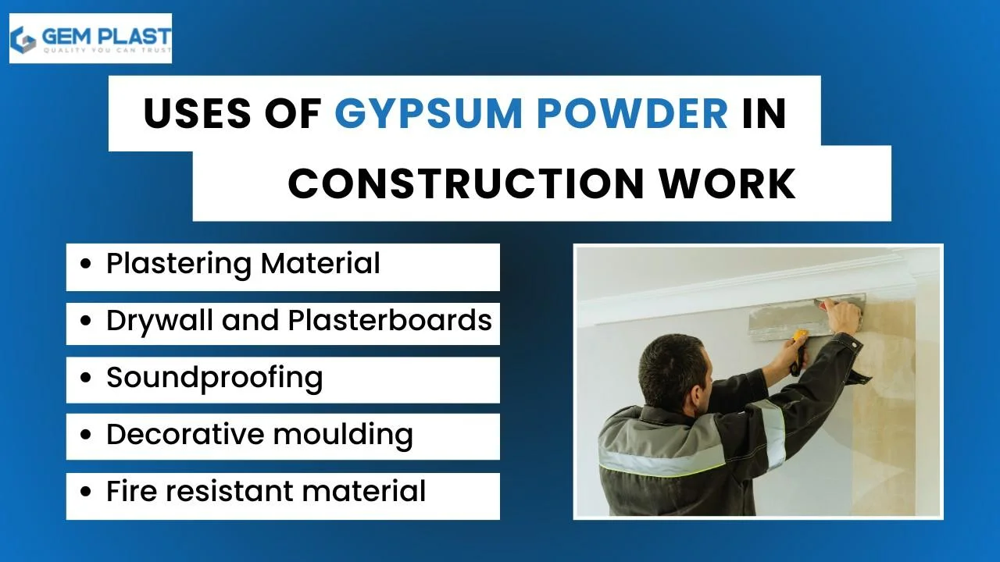
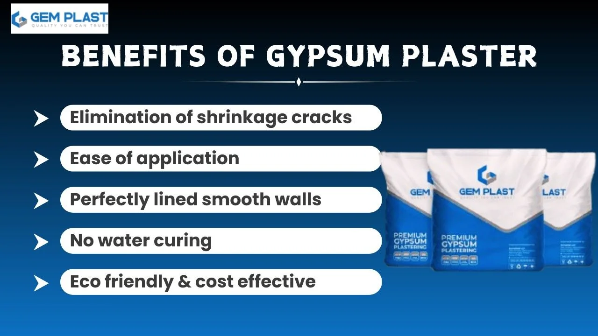
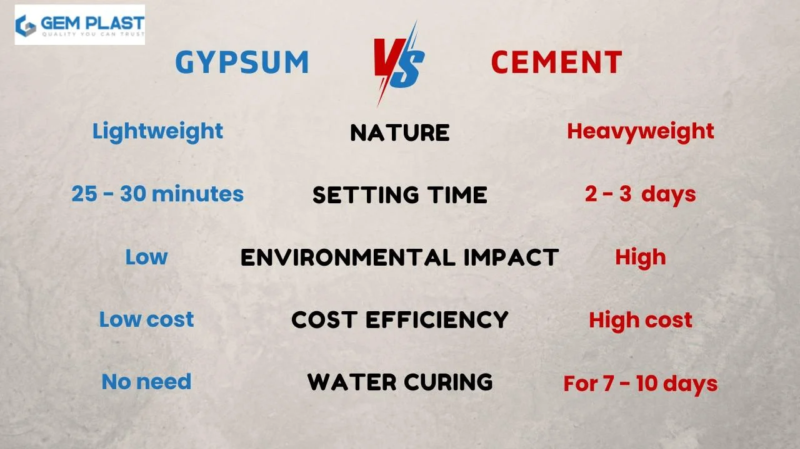

Gypsum is a mineral that is formed naturally and it has many applications. It is used in various sectors. You can find different gypsum powder uses in this blog. Gypsum powder is manufactured from gypsum stone. It is safe for humans. This is because gypsum powder is widely used in the construction industry and its usage is increasing due to its fast setting and cheap nature.
Gypsum Powder Uses In Every Industry
Gypsum powder uses in the construction field
1. Plastering Material
In its application, the Gypsum powder is used as a plastering material in place of cement. Gypsum plaster is cheaper, and fast setting time. The powder is then combined with water to form the plastering material.
2. Drywall and Plasterboards
With Gypsum powder, we can make drywall and plasterboards for construction and ceiling work. It is very time-saving and the drywall is very strong.
3. Soundproofing
Gypsum is also used for soundproofing. Gypsum plaster walls prevent sound from passing through the walls. It is perfect for schools, Hospitals, home theatres and bedrooms.
4. Decorative moulding
For constructing various gypsum mould designs gypsum powder can be used. It is very easy to create various shapes and patterns for designing. So we can construct various designs for ceilings.
5. Fire resistant material
Gypsum is a fire-resistant material. It can prevent heat for some time, so it can be used for safety purposes. Gypsum plaster walls can maintain the temperature inside.

Gypsum powder uses in the agricultural field
1. Improving soil structure
When gypsum is added to the soil, it will increase the soil structure. The soil becomes thicker after dissolving gypsum.
2. Reduces soil salinity
Gypsum will help to reduce the salinity of the soil. It is usually done in seawater-flooded zones. By adding gypsum powder to the soil it reduces the excess salt presence and regains soil fertility needed for the agriculture.
3. soil erosion
During rainy season soil erosion occurs and gypsum is used to prevent soil erosion. When gypsum is added, the soil becomes stronger, and it prevents run-off water.
4. Supply sulfur and calcium
Plants need sulfur and calcium. So when gypsum powder is added the sulfur and calcium dissolve into the soil and strengthen the root and nutrient intake becomes efficient.
Gypsum powder uses in the industrial field
1. Chemical Manufacturing
Gypsum is used in the production of chemicals. Because of its thermal conductivity gypsum acts as a catalyst in various industrial chemical reactions.
2. Filler in paper
For the production of paper, gypsum acts as filler. It will increase the quality of printing and writing of the paper.
3. Thickening agent in paint production
Thickening agents help paints to increase the viscosity and adhesive effect of the paint. Gypsum is added to paints to increase it and it will help paint to dripping from the walls. It will increase the coverage of the paint.
4. Used in the textile and leather industry
To ensure even colour across the cloth gypsum is added and it helps to maintain the pH level of the cloth. Gypsum have a major part in the production of quality materials. In leather production, it acts as a filler and helps to get a smooth and soft leather finish.
5. Used in plastic and polymer manufacturing
Gypsum is used for the manufacturing of plastic and polymer as a filler and for the sustainability of the product. It helps to increase surface finish and thickness without affecting any mechanical properties.
Advantages of using Gypsum powder.

1. Elimination of shrinkage cracks
The main benefit of gypsum powder is the reduction of shrinkage cracks. When gypsum powder is mixed with water to form gypsum plaster. This gypsum plaster has stability and it helps to become strong walls.
2. Ease of application
The application of gypsum on surfaces is very easy. So it become widely used in the construction field. The walls and ceilings can be plastered smoothly with less effort. Also, the setting time is very short.
3. Perfectly lined, leveled, smooth walls
By doing gypsum plastering the walls become very smooth leveled. This can avoid the patching process before the painting. We can start painting after applying gypsum plastering within 2-3 days.
4. No water curing is required
The main advantage of gypsum is it does not need any water curing compared to cement plaster. Gypsum plastering is the new method of plastering. It saves time during construction.
5. Eco friendly & cost effective
While comparing to cement, gypsum powder price is low. Gypsum is a natural mineral and its production is not complicated. It does not have any emissions like cement.
How To Choose The Right Gypsum Powder
1. Purity and quality
The gypsum purity determines the quality of the work. To increase the smoothening and to be crack resistant the purity of the gypsum is important.
2. Durability & finishing of the material
When using gypsum powder, the surface becomes more durable than cement. High-quality gypsum powder can reduce the maintenance cost and the sustainability of the surface.
3. Warranty
The warranty of the product reveals the quality of the product and the confidence of the dealer. So when choosing a gypsum powder select the product with maximum warranty.
4. Price range
Maybe be high price does not imply it has high quality. So research different products and the value they offer to select a product. Gemplast is one of the dealers that provides High-quality products at affordable prices.
5. Insulation & Acoustic properties
While choosing gypsum powder make sure about the insulation and acoustic properties. Some products do not contain these properties. Quality gypsum powder will show soundproofing and heat resistance
6. Choose right supplier
Choosing the right supplier is very important. To get best gypsum buy from a good dealer. Also know the gypsum powder uses for your purpose, For selecting suppliers research the experience and reviews about them. The service quality can be identified from the reviews they got. Make sure the dealer is providing enough warranty for the gypsum.
Gemplast is one of the best gypsum product suppliers in Kerala providing a lifetime warranty for the gypsum plastering. To ensure top quality we are using gypsum manufactured from Iran for 22 years.
Gypsum Plaster vs. Cement Plaster
There are many differences between gypsum and cement. Both are used to plaster the walls. Gypsum is used to create various designs. The main differences are the following.

Leave a Comment